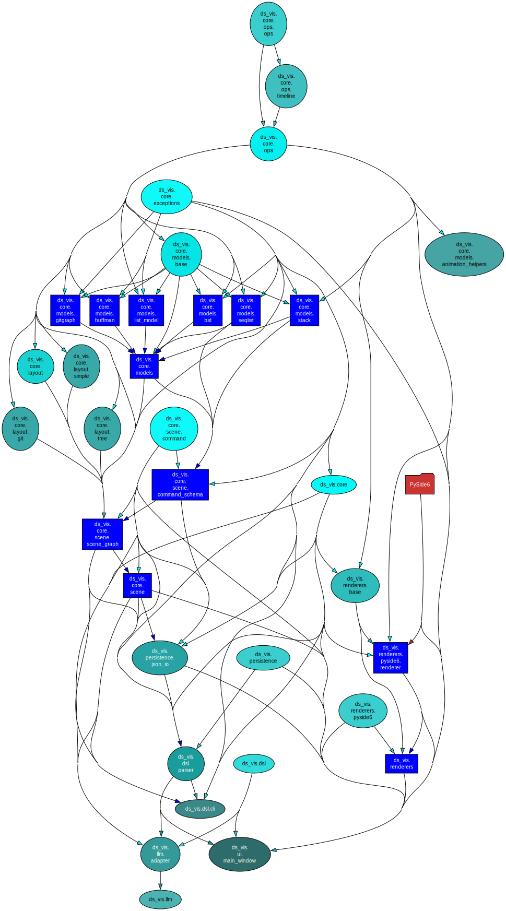
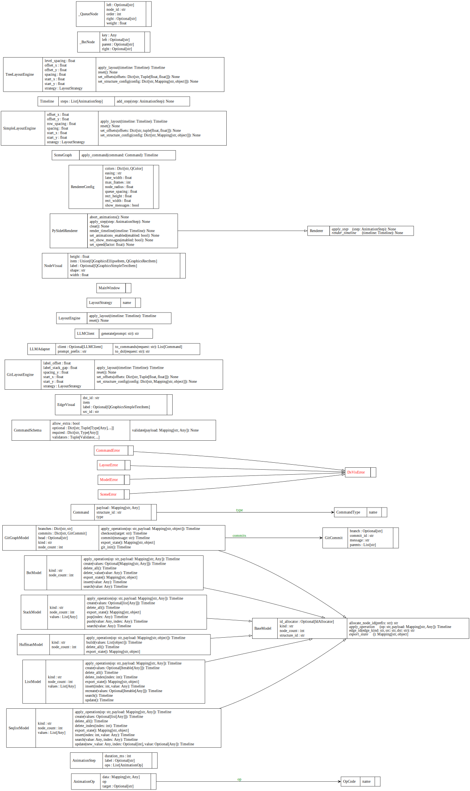
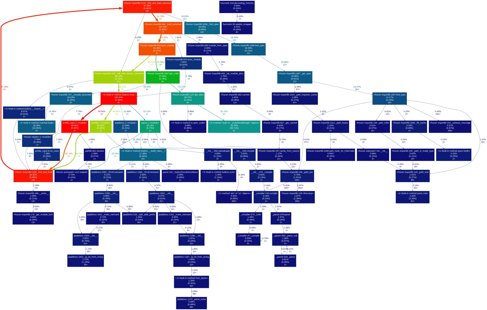

Diagrams
Immport Dependency Graph
下图是 pydeps 从源码自动生成, 展示模块间的import依赖关系(max-bacon=2), 可以检查架构层级间的依赖设计.
执行的命令为:
uv run pydeps src/ds_vis \
--noshow \
--max-bacon=2 \
--cluster \
-T svg \
-o docs/diagrams/imports.svg

使用
scripts/arch_graph.py生成的效果. (outdated)
graph TD
classDef default fill:#f9f9f9,stroke:#333,stroke-width:2px;
classDef core fill:#e1f5fe,stroke:#01579b;
classDef protocol fill:#f3e5f5,stroke:#4a148c,stroke-dasharray: 5 5;
UI_Layer["UI (Window)"]
Renderer_Layer["Renderers (PySide6)"]
Scene_Layer["SceneGraph (Coordinator)"]:::core
Models_Layer["Models (Data Structure)"]:::core
Layout_Layer["Layout Engine"]
Ops_Protocol["Ops (Protocol)"]:::protocol
DSL_Layer["DSL / Parser"]UML (pyreverse)
下图是 pyreverse(from pylint) 从源码自动生成，展示UML图
执行的指令为：
uv run pyreverse -o dot -p ds_vis src/ds_vis -d docs/diagrams/uml
dot -Grankdir=LR -Tsvg docs/diagrams/uml/classes_ds_vis.dot -o docs/diagrams/uml/classes_ds_vis.svg
# 正常版本的UML
dot -Tsvg docs/diagrams/uml/classes_ds_vis.dot -o docs/diagrams/uml/classes_ds_vis.td.svg
dot -Tsvg docs/diagrams/uml/packages_ds_vis.dot -o docs/diagrams/uml/packages_ds_vis.svg
Packages

Classes

Runtime Call Graph
该图由 cProfile + gprof2dot + graphviz 从一次“最小案例运行”自动生成， 用于提供运行时证据（执行路径与热点）。
执行指令：
uv run python -m cProfile -o docs/diagrams/profile/case.pstats tools/profile_case.py
uv run gprof2dot -f pstats docs/diagrams/profile/case.pstats > docs/diagrams/profile/case.dot
dot -Tsvg docs/diagrams/profile/case.dot -o docs/diagrams/profile/callgraph.svg
